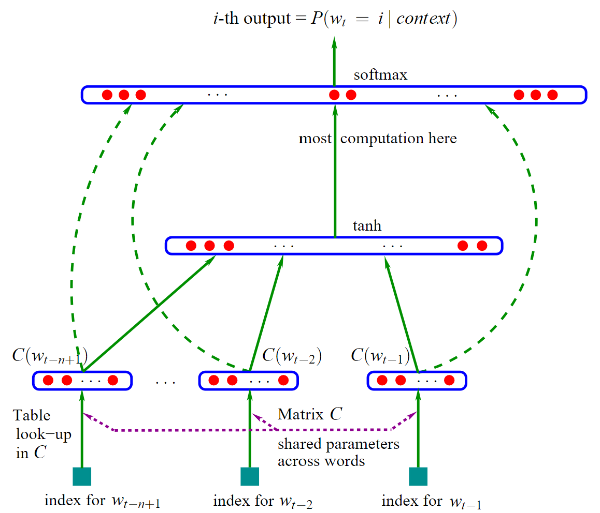

2003 A Neural Probabilistic Language Model
统计语言建模目的是学习语言中单词序列的联合概率函数。由于维度灾难：测试集的单词序列可能出现训练集中从未出现的单词序列。传统n-gram词袋模型成功实现 泛化能力 通过马尔可夫链。文章提出学习词语的 分布式表示 ，该模型会同时学习：（1）每个词的分布式表示（2）一个以这些表示为基础的词序列概率函数。
任务: 我们要训练一个语言模型。当前遇到的训练句子是 “a cat sat on a mat”。
目标: 根据上下文 预测下一个词。
模型简化设定（从底到顶）：
- 上下文长度 (n-1): 只看前面 2 个词（主观），也就是最底下绿色方块只有俩，w_t-2, w_t-1。
- 词向量维度 (m): 把每个词表示成一个 3 维的向量（主观），从绿色方块变成3个红色点。
- 隐藏层大小 (h): 我们的隐藏层有 2 个神经元（主观），到中间红点这里会乘以一个矩阵，矩阵的规模和2个神经元有关。
- 词汇表 (V): 我们的整个语言只有 6 个词(客观)：
{a, cat, mat, on, sat, the}。它们的索引分别是{0, 1, 2, 3, 4, 5}，也就是最顶上。
正向传播（底部流向顶部）：
-
输入与查表：从最底绿点到倒二红点，w是词，绿块是w的索引, 倒二行红点是w的词向量 C(w)。
训练句子 “a cat sat on a mat” 截取出(a, cat, sat), (cat, sat, on)…, 第一条为(a, cat, sat)。
输入: 上下文是 “a cat”。它们的索引分别是
0和1。查表 (C): 我们有一个
6x3的词向量矩阵C(6个词，每个3维)，它刚被随机初始化：词 (索引) 词向量 C(word)a (0) [0.1, 0.2, 0.3]cat (1) [0.4, 0.5, 0.6]mat (2) [0.7, 0.8, 0.9]on (3) [1.0, 1.1, 1.2]sat (4) [1.3, 1.4, 1.5]the (5) [1.6, 1.7, 1.8]我们从这个表里查出输入词的向量：
C(a)=[0.1, 0.2, 0.3]C(w_t-2)C(cat )=[0.4, 0.5, 0.6]C(w_t-1)
-
拼接输入向量
把上一步得到的两个词向量拼接成一个大向量
x，形成 tanh 下的长红点。
x = [ C(sat), C(on) ] = [1.3, 1.4, 1.5, 1.0, 1.1, 1.2]
这个x的维度是(n-1) * m = 2 * 3 = 6（看了前两个词，每个词向量长度为3）。 -
计算隐藏层 (tanh)
现在信息流向了中间的
tanh隐藏层。计算公式是tanh(d + Hx)。x: 就是我们上一步得到的[1.3, 1.4, 1.5, 1.0, 1.1, 1.2]。H: 是一个权重矩阵，它的维度是h x (n-1)m=2 x 6，6 对应于大向量x长度为6，2是人为设置的，即神经元个数（复杂的矩阵能解决复杂的问题）。d: 是隐藏层的偏置向量。它的维度是h = 2，对应神经元个数。
初始时刻，
H和d也被随机初始化了：
H = [[0.1, 0.2, 0.3, 0.4, 0.5, 0.6], [0.7, 0.8, 0.9, 1.0, 1.1, 1.2]]d = [0.1, 0.2]现在计算
d + Hx:
Hx = [[...]*[0.3], [...]*[0.4], ...](矩阵乘法) =[4.81, 11.23]
d + Hx = [0.1, 0.2] + [4.81, 11.23] = [4.91, 11.43]然后应用
tanh函数，得到隐藏层的输出h_out:h_out = tanh([4.91, 11.43]) ≈ [0.999, 1.0] -
计算输出层
现在信息将形成最顶层的红点，即一个6维向量，表示所有词的出现概率。计算公式是
y = b + Wx + U * h_out=b + Wx + U * tanh(d + Hx)。b: 输出层的偏置，维度是|V| = 6（因为词的个数是6）。W: 从输入层到输出层的直连权重，维度是|V| x (n-1)m=6 x 6，（W虽然乘的是x，但其实相当于W可选，可设置为0）。U: 从隐藏层到输出层的权重，维度是|V| x h=6 x 2。- （PS：说白了 Wx 是 输入-输出，U * h_out 是 输入-隐藏-输出，这里加和作为一个"并行融合"）
假设它们也被随机初始化了：
U * h_out:6x2矩阵乘以2x1向量[0.999, 1.0]，得到一个6x1的向量。
W * x:6x6矩阵乘以6x1向量[0.3, ..., 0.2]，得到一个6x1的向量。最后把这三者加起来，我们得到一个
6x1的向量y，它代表了词汇表中每个词的“原始分数”（logits）：
y = [score_a, score_cat, score_mat, score_on, score_sat, score_the]
假设算出来y = [0.5, 0.2, 0.9, -1.2, 0.1, 0.8] -
Softmax
Softmax函数把这些原始分数转换成和为1的概率分布。
P(word) = e^(score_word) / ∑ e^(all_scores)P("a") = e^0.5 / (e^0.5 + e^0.2 + ... + e^0.8) ≈ 0.17
P("cat") ≈ 0.12
P("mat") ≈ 0.25
… 等等，所有概率加起来等于1。 -
正向传播完成！
反向传播
我们的模型预测“mat”的概率最高，但正确答案是“sat”。现根据这个错误，从图的顶部反向传播回去，微调参数 (可能的参数：C, H, d, U, b, W)。
自己找个简单例子推反向传播，不展示了，损失函数计算损失，然后偏导为原理，优化器优化deta…. 注意的是，最后会调整 C 从而实现词向量的训练。